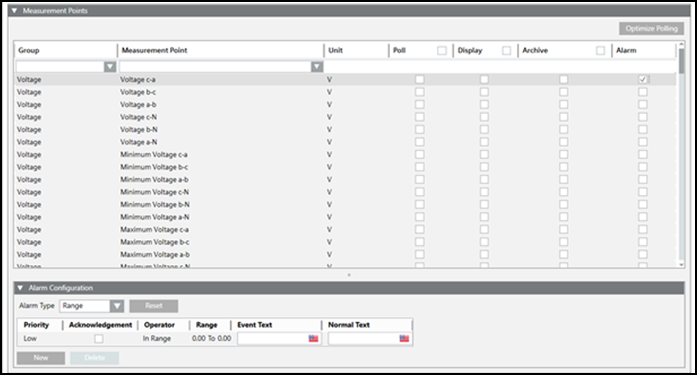
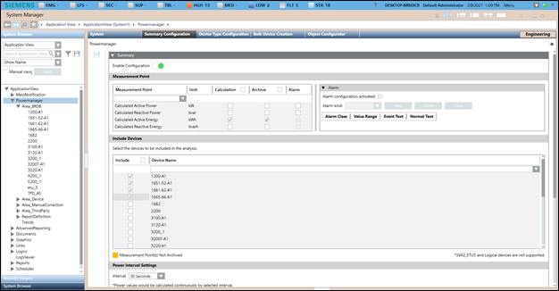
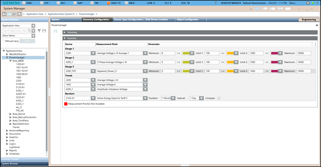

System Summary Configuration
In Engineering mode, when you select the Powermanager root node, you must first configure the parameters of the System Configuration tab that displays by default.
The following expanders let you configure the parameters of the System Summary Configuration tab:
System Summary Expander
- Enable Configuration: Select the option to enable configuration.
- Measurement Point: It allows you to select the measurement points to be configured for the corresponding system under the Device column
- Measurement Point: Displays the name of the measurement point. You can select the measurement point from the dropdown box.
- Unit: Displays the unit of the measurement point.
- Calculation: Select the checkbox to enable the calculation.
- Archive: Select the checkbox for the measurement points to archive the data.
- Alarm: Select the checkbox to enable alarms for the corresponding measurement points.
- Alarm Expander: Select this checkbox to activate the alarm for the corresponding measuring point.
To configure a workstation alarm for a point, you must configure the following fields:
- Alarm kind: Allows you to choose the type of alarm to be activated.
- Reset: Allows you to rest all alarm conditions from the table and reset the default alarm class.
- Alarm Type: The alarm type to be enabled for an event.
- Check Acknowledgement checkbox.
- For Range:
Priority: Low, Medium, High and Fault
Operator:: In range, !.. : Not in range , || : OR, !|| : NOR
Range: The value, or range of values, for which an alarm is to be issued. - For Limit:
Priority: Low, Medium, High and Fault
Check Acknowledgement checkbox.
Operator: : > : Greater than , >= : Greater than or equal to , < : Less than, <= : Less than or equal to
Limit: User defined values
Operator: Allows you to select between the = and None options.
UpperHysteresis: The upper range for the alarm value beyond which alarms will be generate.
Operator: Allows you to select between the = and None options.
Lower Hysteresis: The lower range for the alarm value below which alarms will be generated. - EventText: The text to display when the alarm is issued.
- NormalText: The text to display when the alarm ceases.
- New: Allows to add new rows with default alarm class and values.
- Delete: Allows you to delete the selected alarm row.
- Include Devices: Allows you to select the devices to be included in the calculations for the selected area. It consists of the following columns:
- Include: Select the checkbox to include the device.
- Device Name: Displays the name of the devices in the selected area.
- Power Interval Settings: It consists of the Interval drop down. Allows you to select the interval at which the power values are calculated.


Favorites Expander
It allows to configure the following parameters that are displayed in the Favorites tile in Operating mode.
- Device: It allows you to select the devices to be displayed in the Favorites tile in Operating mode with the corresponding representation.
- Measurement Point: It allows you to select the measurement points to be configured for the corresponding device under the Device column.
- Parameter: It allows to set the limits of the gauges and the color for the representing the corresponding measurement point. You can also select the time duration to be used in the bar chart.
